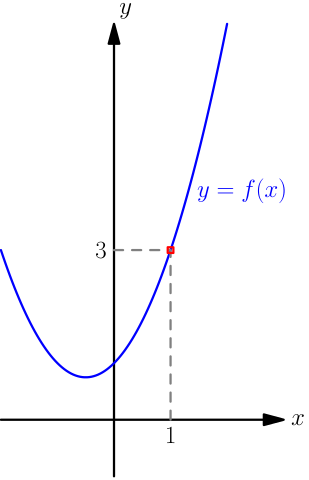
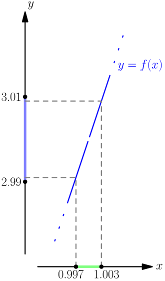

Definition of Limit¶
Limit is a very important concept in calculus. There are two common ways to introduce it: teaching students to calculate limits without talk much about why they work like they do (high schools), and proving all the properties of limits needed very carefully with somewhat difficult proofs (university). I will aim for something in the middle; my goal is to show you how limits work without doing anything too difficult.
The Idea¶
Let's get started by plugging some numbers into the function $$ f(x) = \frac{x^3-1}{x-1}. $$ We notice that $f(1)$ is undefined, because that gives division by zero. However, if we plug in some values that are just a little bit greater than $1$, we get this:
| $x$ | $f(x)$ |
|---|---|
| $1$ | undefined |
| $1.1$ | $3.31000\dots$ |
| $1.01$ | $3.03010\dots$ |
| $1.001$ | $3.00300\dots$ |
| $1.0001$ | $3.00030\dots$ |
| $1.00001$ | $3.00003\dots$ |
The values of $f$ seem to be quite close to $3$.
We notice a similar thing if we plug in values that are just a little bit less than $1$:
| $x$ | $f(x)$ |
|---|---|
| $0.9$ | $2.71000\dots$ |
| $0.99$ | $2.97010\dots$ |
| $0.999$ | $2.99700\dots$ |
| $0.9999$ | $2.99970\dots$ |
| $0.99999$ | $2.99997\dots$ |
In this situation, we say that the limit of $f(x)$ as $x \to 1$ (read: $x$ approaches $1$, $x$ goes to $1$) is $3$, and we write $$ \lim_{x \to 3} f(x) = 3. $$ We will work with limits a lot, and that will include proving some things about limits. Even though plugging in a bunch of numbers is a good way to make a guess about the limit, it won't suffice anymore when we want to do something more generally and we can't just plug in numbers. For that, we need a better definition of limit.
The above lim notation is somewhat tall, so if it's somewhere in the middle of text, it's often written with the $x \to 3$ part off to the side, like $\lim_{x \to 3} f(x)$.
Introducing Intervals¶
Consider the open interval $(2.99, 3.01)$; that is, the set of all numbers between $2.99$ and $3.01$. The ends of this interval are $3 \pm 0.01$. The interval is open, which means that the end points are not included in the interval, $2.99 \notin (2.99, 3.01)$ and $3.01 \notin (2.99, 3.01)$.
By plugging in more numbers, we notice that $$ f(0.997) = 2.991009 \in (2.99, 3.01) $$ and $$ f(1.003) = 3.009009 \in (2.99, 3.01). $$ Let's see what happens for numbers between $0.997$ and $1.003$.
| $x$ | $f(x)$ |
|---|---|
| $0.997$ | $2.991009 \in (2.99, 3.01)$ |
| $0.998$ | $2.994004 \in (2.99, 3.01)$ |
| $0.999$ | $2.997001 \in (2.99, 3.01)$ |
| $1.000$ | undefined |
| $1.001$ | $3.003001 \in (2.99, 3.01)$ |
| $1.002$ | $3.006004 \in (2.99, 3.01)$ |
| $1.003$ | $3.009009 \in (2.99, 3.01)$ |
Of course, we can't check every number between $0.997$ and $1.003$ with a calculator, but what seems to be happening is that $$ f(\text{any number between $0.997$ and $1.003$ except $1$}) \in (2.99,3.01). $$
The graph of this function looks like this:

Let's zoom onto the square that I marked with red. The interval $(2.99, 3.01)$ is for the values of the function, so I'll draw it on the $y$ axis, but $0.997$ and $1.003$ are inputs of the function, so I'll draw them on the $x$ axis. The axises should actually be quite far away from the red square, but I'm drawing them anyway because I want something to mark intervals and numbers onto.

There's a hole in the graph because $f(1)$ is undefined. The dashed lines are showing how taking any number between $0.997$ and $1.003$ except $1$ gives a corresponding $f$ value between $2.99$ and $3.01$. Note that the values of $f$ that we get by plugging in numbers between $0.997$ and $1.003$ don't "fill" all of the interval $(2.99, 3.01)$, but that doesn't matter; what matters is that they all go somewhere inside the interval $(2.99, 3.01)$.
Letting $I_x=(0.997,1.003)$ denote the interval on the $x$ axis and $I_y=(2.99,3.01)$ denote the interval on $y$ axis, we get $$ f(\text{any number in $I_x$ except $1$}) \in I_y. $$
The Definition¶
Now we are ready to define what a limit is without using a calculator to plug in a bunch of numbers. We write $\lim_{x \to 1} f(x) = 3$, if for any open interval $I_y$ centered around $3$, there is some open interval $I_x$ centered around $1$ such that $$ f(\text{any number in $I_x$ except $1$}) \in I_y. $$ This is the definition of $\lim_{x \to 1} f(x) = 3$.
Above we found that for the function $f$ that we have been using on the rest of this page, and for $I_y = (2.99,3.01)$, we may choose $I_x = (0.997,1.003)$, and stuff works. Writing $\lim_{x \to 1} f(x) = 3$ means that for any interval $I_y$ around $3$, no matter how small, we can find a corresponding interval $I_x$. So, the above calculations don't actually prove that $\lim_{x \to 1} f(x) = 3$, because for that, we should prove that a similar thing works for all open intervals centered around $3$, not just for the one example interval $(2.99,3.01)$ that I chose.
Note that usually the $I_x$ interval depends on which $I_y$ interval we are considering. For example, for $I_y = (2.99999,3.00001)$, we will likely need a smaller $I_x$ interval than we needed for $I_y = (2.99, 3.01)$. The definition just says that there has to be some interval; it doesn't matter how small it is, as long as there is one.
Notice that $f(1)$ is not used at all. This makes sense, because limits are all about what happens around $x=1$, not at all about what happens at exactly $x=1$.
Of course, we can have any other numbers instead of $1$ and $3$ in the definition of limit. That results in the following definition.
The limit is defined as follows: we write $\lim_{x \to a} f(x) = b$, if for any open interval $I_y$ centered around $b$, there is some open interval $I_x$ centered around $a$ such that $$ f(\text{any number in $I_x$ except $a$}) \in I_y. $$
This definition is usually written in a slightly different way, and that's called the $\epsi,\delta$ definition of a limit. The name comes from using the greek epsilon letter $\epsi$ to denote the size of $I_y$, and the delta letter $\delta$ to denote the size of $I_x$.